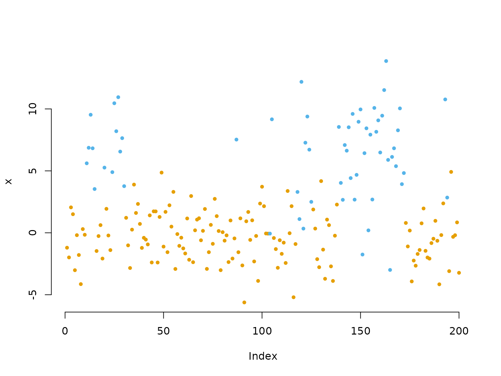
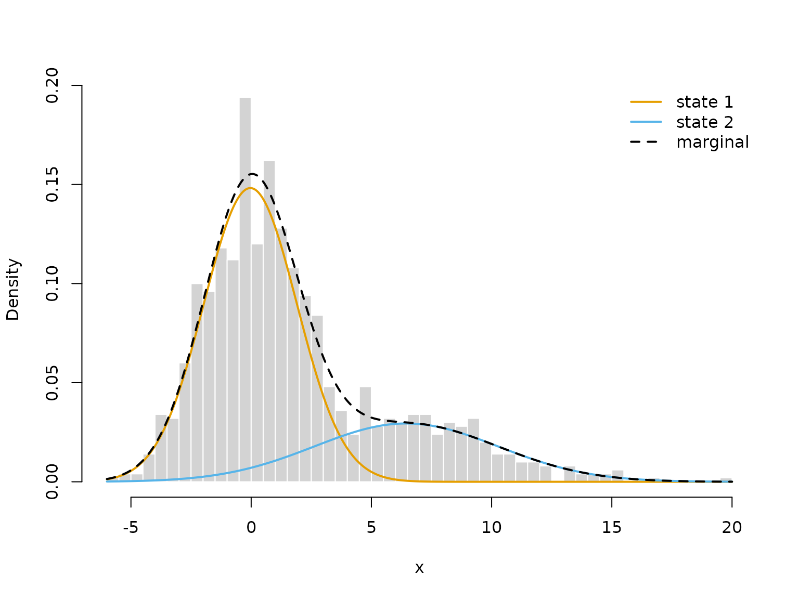
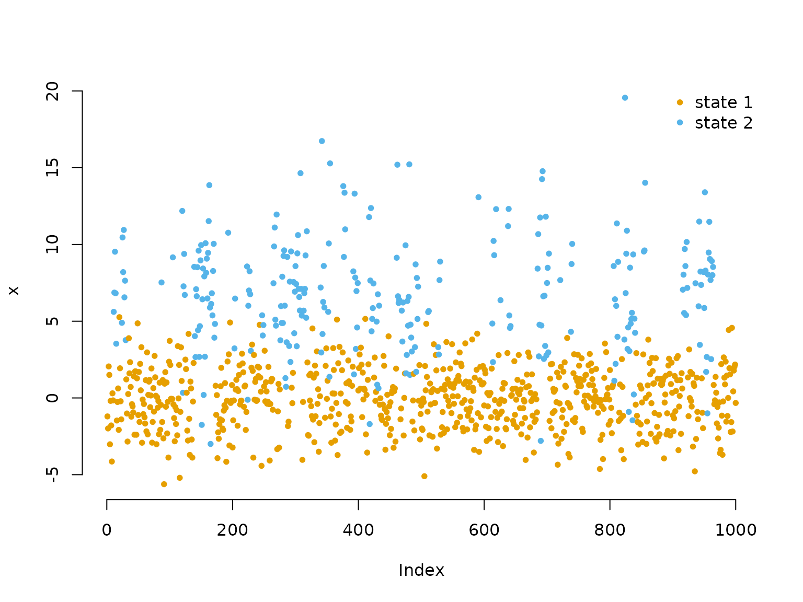
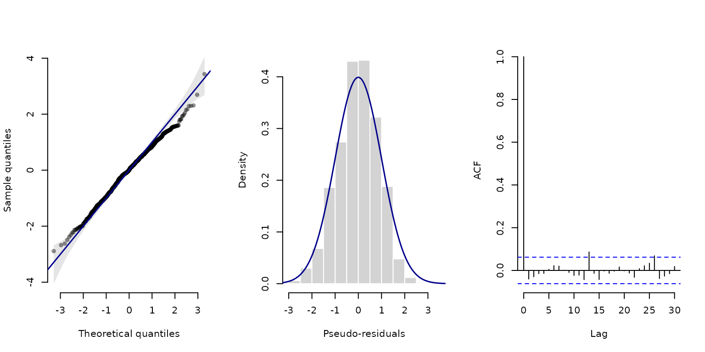
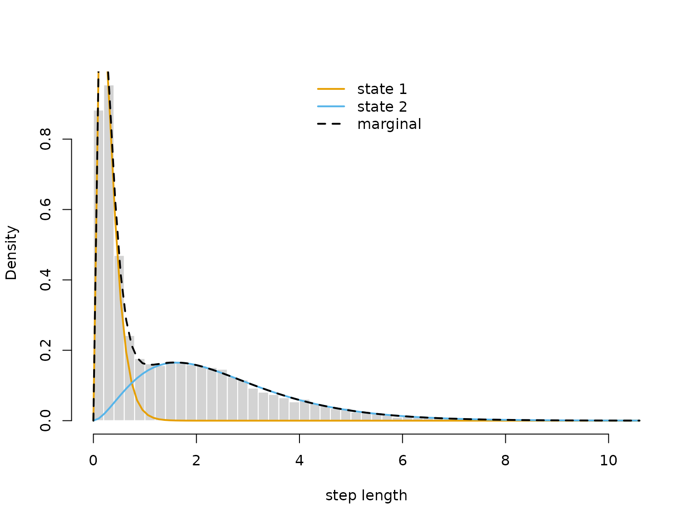

2 Finer control
Jan-Ole Fischer
Finer_control.RmdBefore diving into this vignette, we recommend reading the vignette Introduction to LaMa.
In the introduction, we used a few shortcuts:
statedens() built the matrix of state-dependent densities,
forward("stationary", ...) computed the initial
distribution, and lama() gave us a model object for
decoding, residuals and plots. Each of them is code you can also write
yourself – with automatic differentiation just as without – which gives
arbitrarily fine control. You need this as soon as a model does not fit
the shortcuts, e.g. for a custom initial distribution, densities
transformed by hand, or other model classes like continuous-time HMMs,
state space models or hidden semi-Markov models.
In this vignette, we first explain how the HMM likelihood is computed
and fit a simple HMM without automatic differentiation to see all
building blocks at work. We then write the likelihood of the
trex model from the introduction by hand, using
RTMB as before.
The HMM likelihood
Computing the HMM likelihood for observations x_1, \dots, x_T is non-trivial, as we do not observe the underlying states and need to sum out all possible state sequences. Exploiting the Markov property, the so-called forward algorithm does this recursively as a matrix product:
L(\boldsymbol{\theta}) = \boldsymbol{\delta}^{(1)} \boldsymbol{P}(x_1)
\boldsymbol{\Gamma} \boldsymbol{P}(x_2) \boldsymbol{\Gamma} \dots
\boldsymbol{\Gamma} \boldsymbol{P}(x_T) \boldsymbol{1}^\top,
where \boldsymbol{\delta}^{(1)}
and \boldsymbol{\Gamma} are the initial
distribution and the transition probability matrix, \boldsymbol{P}(x_t) is a diagonal matrix with
the state-dependent densities (or probability mass functions) f_j(x_t) = f(x_t \mid S_t = j) on its
diagonal, \boldsymbol{1} is a row
vector of ones and \boldsymbol{\theta}
contains all model parameters. In practice, forward() does
not compute this likelihood directly, but its logarithm via a scaling
strategy (Zucchini et al.
2016).
Many parameters are constrained, e.g. standard deviations are
positive and the rows of the transition probability matrix sum to one.
Instead of constrained optimisation, we maximise the likelihood w.r.t.
unconstrained parameters (par in the code), which are
transformed by link functions: e.g. the log link for positive parameters
and the multinomial logistic link (softmax) for the transition
probability matrix, implemented in tpm().
For efficiency, the state-dependent densities are evaluated
vectorised before running the forward algorithm. This gives a matrix
with one row per observation and one column per state, which, throughout
the package, we call the allprobs matrix.
Fitting an HMM without automatic differentiation
forward() and the other building blocks also work
without automatic differentiation. They are then still worth using:
without AD, forward() runs in C++, as does
tpm() for many time-varying transition probability
matrices, which is much faster than writing the forward algorithm
yourself in R. To see all parts in action, we simulate data
from a 2-state HMM with Gaussian state-dependent distributions and fit
it with nlm().
Generating data from a 2-state HMM
# parameters
mu = c(0, 6) # state-dependent means
sigma = c(2, 4) # state-dependent standard deviations
Gamma = matrix(c(0.95, 0.05, # transition probability matrix
0.15, 0.85),
nrow = 2, byrow = TRUE)
delta = stationary(Gamma) # stationary distribution
# simulation
n = 1000
set.seed(123)
s = rep(NA, n)
s[1] = sample(1:2, 1, prob = delta) # sampling first state from delta
for(t in 2:n){
# drawing the next state conditional on the last one
s[t] = sample(1:2, 1, prob = Gamma[s[t-1],])
}
# drawing the observation conditional on the states
x = rnorm(n, mu[s], sigma[s]) # independent given the state sequence
color = LaMaColors(2)
plot(x[1:200], bty = "n", pch = 20, ylab = "x",
col = color[s[1:200]])
Inference by direct numerical maximum likelihood estimation
Within the negative log-likelihood function we
- build the transition probability matrix using the
tpm()function, - compute the stationary distribution of the Markov chain using
stationary(), - build the
allprobsmatrix, and - calculate the log-likelihood using
forward(), returning -1 times it for minimisation.
nll = function(par, x){
# 1) Transition probability matrix
Gamma = tpm(par[1:2]) # multinomial logistic link (softmax)
# 2) Stationary distribution for this matrix
delta = stationary(Gamma) # will be used as initial
# Parameter transformations for unconstrained optimisation
mu = par[3:4] # no transformation needed
sigma = exp(par[5:6]) # strictly positive
# 3) Calculating state-dependent densities outside the forward algorithm
allprobs = matrix(1, length(x), 2)
for(j in 1:2) allprobs[,j] = dnorm(x, mu[j], sigma[j])
# 4) Run the forward algorithm
-forward(delta, Gamma, allprobs)
}The shortcut statedens(x, dnorm, mu, sigma) would give
the same matrix as the loop in step 3, and
forward("stationary", Gamma, allprobs) would replace step
2.
We fit the model with nlm(), starting from initial
values on the unconstrained scale. As tpm() uses the
softmax link, an off-diagonal probability p corresponds to the starting value
qlogis(p); here we start near 0.05. In practice, it is
advisable to try several sets of initial values to find the global
maximum.
par = c(logitGamma = qlogis(c(0.05, 0.05)),
mu = c(1,4),
logsigma = c(log(1),log(3)))
# initial transformed parameters: not chosen too well
system.time(
opt <- nlm(nll, par, x = x)
)
#> user system elapsed
#> 0.132 0.006 0.138This is fast because forward() runs in C++.
With the forward algorithm written in R, the same fit takes
roughly three times as long.
With AD, we can use the same likelihood function, only wrapped into a function of a parameter list:
system.time({
obj = MakeADFun(function(p) nll(p$par, x), list(par = par), silent = TRUE)
opt_ad <- nlminb(obj$par, obj$fn, obj$gr)
})
#> user system elapsed
#> 0.143 0.000 0.143For such a small and simple model, it hardly matters whether we use
AD. For larger models, however, it matters a lot: without AD, the
gradient is approximated by finite differences, which costs one
additional likelihood evaluation per parameter and is less accurate. For
example, a 3-state model for the trex step lengths and
turning angles (15 parameters) takes about 8 seconds to fit without and
about 1 second with AD. The exact gradient also makes the optimisation
numerically more stable.
Visualising results
Without RTMB, there is no model object, so we need to
back-transform the estimated parameters ourselves, as in the
likelihood:
estimate = opt$estimate
# transform parameters to natural scale
Gamma = tpm(estimate[1:2])
delta = stationary(Gamma) # stationary HMM
mu = estimate[3:4]
sigma = exp(estimate[5:6])
hist(x, prob = TRUE, bor = "white", breaks = 40, main = "")
curve(delta[1]*dnorm(x, mu[1], sigma[1]), add = TRUE, lwd = 2, col = color[1], n=500)
curve(delta[2]*dnorm(x, mu[2], sigma[2]), add = TRUE, lwd = 2, col = color[2], n=500)
curve(delta[1]*dnorm(x, mu[1], sigma[1])+delta[2]*dnorm(x, mu[2], sigma[2]),
add = TRUE, lwd = 2, lty = "dashed", n=500)
legend("topright", col = c(color, "black"), lwd = 2, bty = "n",
lty = c(1,1,2), legend = c("state 1", "state 2", "marginal"))
To decode the most probable state sequence with
viterbi(), we first compute the allprobs
matrix:
allprobs = matrix(1, length(x), 2)
for(j in 1:2) allprobs[,j] = dnorm(x, mu[j], sigma[j])
states = viterbi(delta, Gamma, allprobs)
plot(x, pch = 20, bty = "n", col = color[states])
legend("topright", pch = 20, legend = c("state 1", "state 2"),
col = color, box.lwd = 0)
For pseudo-residuals, pseudo_res()
needs the observations, the parametric family, the estimated parameters
and the local state probabilities:
probs = stateprobs(delta, Gamma, allprobs) # local state probabilities
pres = pseudo_res(x, # observations
"norm", # parametric distribution to use
list(mean = mu, sd = sigma), # parameters for that distribution
probs) # local state probabilities
# use the plotting method for LaMaResiduals
plot(pres)
In this case, our model looks really good – which it should because it is correctly specified.
Writing everything yourself with RTMB
Writing the likelihood explicitly works just the same with automatic
differentiation. We return to the trex model from the
introduction:
par = list(
log_mu = log(c(0.3, 1)), # initial means for step length (log-transformed)
log_sigma = log(c(0.2, 0.7)), # initial sds for step length (log-transformed)
eta = rep(-2, 2) # initial t.p.m. parameters (on logit scale)
)
dat = list(
step = trex$step, # hourly step lengths
N = 2
)This time, we compute the stationary distribution with
stationary() and build allprobs with a loop
over states. Rows of missing observations stay 1, such that they do not
contribute to the likelihood – exactly what statedens()
does.
nll2 = function(par) {
getAll(par, dat) # makes everything contained available without $
Gamma = tpm(eta) # computes transition probability matrix from unconstrained eta
delta = stationary(Gamma) # computes stationary distribution
# Parameter transformations for strictly positive parameters
mu = exp(log_mu)
sigma = exp(log_sigma)
# Reporting statements for later use
REPORT(mu); ADREPORT(mu)
REPORT(sigma); ADREPORT(sigma)
# Calculating all state-dependent densities
allprobs = matrix(1, nrow = length(step), ncol = N)
ind = which(!is.na(step)) # only for non-NA obs.
for(j in 1:N){
allprobs[ind,j] = dgamma2(step[ind], mu[j], sigma[j])
}
-forward(delta, Gamma, allprobs) # simple forward algorithm
}
obj2 = MakeADFun(nll2, par, silent = TRUE)
opt2 = nlminb(obj2$par, obj2$fn, obj2$gr)
mod2 = lama(obj2)This gives the same fit as the short version in the introduction:
-opt2$objective
#> [1] -10847.12
mod2$Gamma
#> S1 S2
#> S1 0.8269542 0.1730458
#> S2 0.1608473 0.8391527Writing the likelihood explicitly gives full control over each part. Throughout the vignettes, you will see examples of this, e.g.
- a custom initial distribution, like an estimated one for inhomogeneous models (see Extensions),
- the periodically stationary distribution computed by
stationary_p()instead offorward("stationary", ..., tod = tod), to report it for all times of day (see Extensions), - state-dependent densities transformed by hand, e.g. for zero-inflation or smooth densities (see Penalised splines), or
- transition probability matrices computed in a different way, e.g. for continuous-time HMMs or hidden semi-Markov models.
Downstream functions
With automatic differentiation, forward() always reports
delta, Gamma and allprobs, no
matter how they were computed. The viterbi() and
stateprobs() functions either take these as arguments or,
more conveniently, the whole reported mod object as an
input:
states = viterbi(mod2$delta, mod2$Gamma, mod2$allprobs)
all.equal(states, viterbi(mod2))
#> [1] TRUEFor this to work, forward() should only be called once
in the likelihood function, with the trackID argument for
several tracks (see the vignette on Longitudinal
data).
pseudo_res(mod) evaluates the likelihood function again
with the densities replaced by their CDFs, which also works with an
allprobs matrix built by hand. Alternatively, we can
specify the observations, the parametric family and the estimated
parameters manually:
pres_step = pseudo_res(obs = trex$step, # observation sequence
dist = "gamma2", # which parametric CDF to use
par = list(mean = mod2$mu, sd = mod2$sigma), # estimated pars for that CDF
mod = mod2) # model object
all.equal(pres_step, pseudo_res(mod2))
#> [1] TRUEThis is needed when the densities are transformed by hand inside the
likelihood, e.g. for zero-inflation, where swapping in CDFs is not
valid. plot(pres_step) then gives the same plots as
plot(mod2).
Similarly, plot(mod, type = "statedens") needs the
information recorded by statedens(). With a hand-built
allprobs matrix, we plot the estimated state-dependent
distributions ourselves:
delta = mod2$delta
mu = mod2$mu
sigma = mod2$sigma
hist(trex$step, prob = TRUE, breaks = 40,
bor = "white", main = "", xlab = "step length")
for(j in 1:2) curve(delta[j] * dgamma2(x, mu[j], sigma[j]),
lwd = 2, add = TRUE, col = color[j])
curve(delta[1]*dgamma2(x, mu[1], sigma[1]) + delta[2]*dgamma2(x, mu[2], sigma[2]),
lwd = 2, lty = 2, add = TRUE)
legend("top", lwd = 2, lty = c(1, 1, 2), col = c(color, "black"), bty = "n",
legend = c("state 1", "state 2", "marginal"))
Uncertainty quantification
sdreport() gives standard errors for the unconstrained
parameters and for all ADREPORT()ed quantities, the latter
based on the delta method:
sdr = sdreport(obj2)
summary(sdr) # see ?summary.sdreport for more info
#> Estimate Std. Error
#> log_mu -1.1923951 0.011461828
#> log_mu 0.9185717 0.009076411
#> log_sigma -1.6018327 0.016858309
#> log_sigma 0.3993241 0.013479572
#> eta -1.6519372 0.042684391
#> eta -1.5641927 0.041157505
#> mu 0.3034935 0.003478590
#> mu 2.5057090 0.022742845
#> sigma 0.2015268 0.003397402
#> sigma 1.4908167 0.020095571The estimates and standard errors are also available in list format:
as.list(sdr, "Estimate") # estimated parameters
as.list(sdr, "Std") # their standard errors
as.list(sdr, "Estimate", report = TRUE) # ADREPORT()ed quantities
as.list(sdr, "Std", report = TRUE) # their standard errorsThe delta method is not advisable for complex non-linear
transformations. In this case, MCreport() draws samples of
the parameters from the approximate normal distribution of the MLE,
which can then be transformed by any function (see Extensions
for an example).
Tips and common issues
There are some commonly occurring issues with RTMB to
keep in mind. I list the main ones I have encountered here – please let
me know if you encounter more so they can be added.
Non-standard distributions
If you need a non-standard probability distribution, existing
implementations will likely fail due to AD incompatibility. Check
whether the distribution is available in RTMBdist,
which provides a library of AD-compatible distributions for use inside
likelihood functions.
Operator overloading
A typical issue is that some operators may need to be overloaded to
allow for automatic differentiation. In typical model setups
LaMa functions handle this automatically, but if you take a
more individualistic route and encounter an error like
stop("Invalid argument to 'advector' (lost class attribute?)")you might have to overload the operator yourself. To do this put
"[<-" <- ADoverload("[<-")as the first line of your likelihood function. If the error still prevails also add
"c" <- ADoverload("c")
"diag<-" <- ADoverload("diag<-")which should hopefully fix the error.
Initialising with NA
A common problem occurs when initialising objects with
NA values and then filling them with numeric
values. NA is logical, which causes type mismatches that
break automatic differentiation. Always initialise with
numeric or NaN values instead. For example,
avoid
and use
Wrapping arrays in AD()
If you create an array and fill it with something
parameter-dependent, wrap it in AD():
This ensures X is an AD object from the start and that
classes are compatible. Wrapping in AD() is generally a
good idea to resolve the above error, as it introduces no meaningful
overhead when not needed.
No if statements on parameters
You cannot use if statements on parameters
directly, as these are not differentiable. RTMB
builds the tape (computational graph) at the initial parameter
value, so if branches depending on a parameter will produce
gradients that are wrong elsewhere. RTMB will fail, likely
without a helpful error message. if statements that do not
involve parameters are typically fine, since the branch is fixed
throughout optimisation.
Byte compiler side effects
Some unfortunate side effects of R’s byte compiler
(enabled by default) can interfere with RTMB. If you
encounter an error not covered above, try disabling it with
compiler::enableJIT(0)
#> [1] 3Further reading
For more information on RTMB, see its documentation or the
TMB users Google
group.
Continue reading with Extensions.